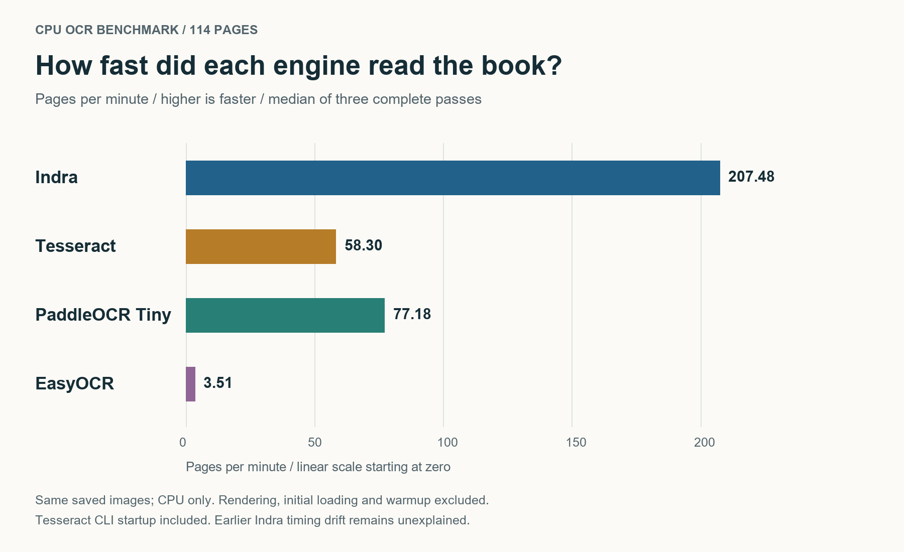
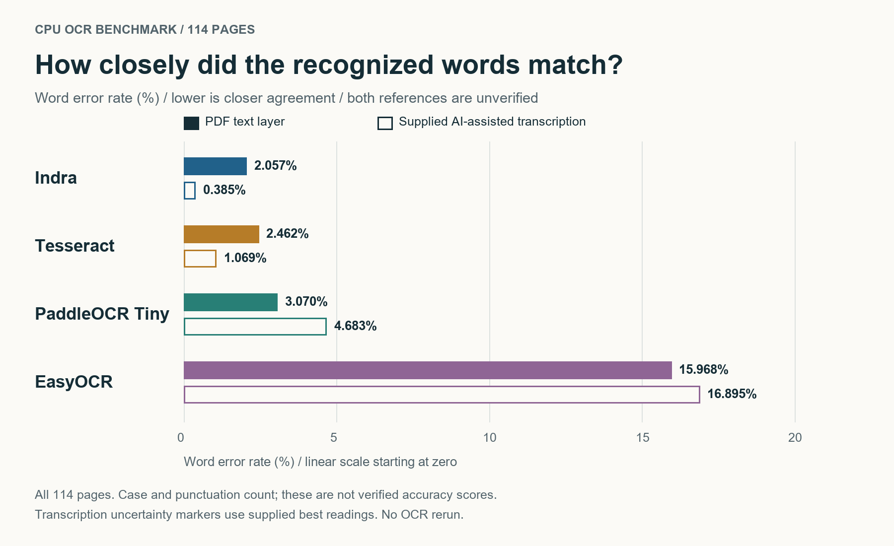
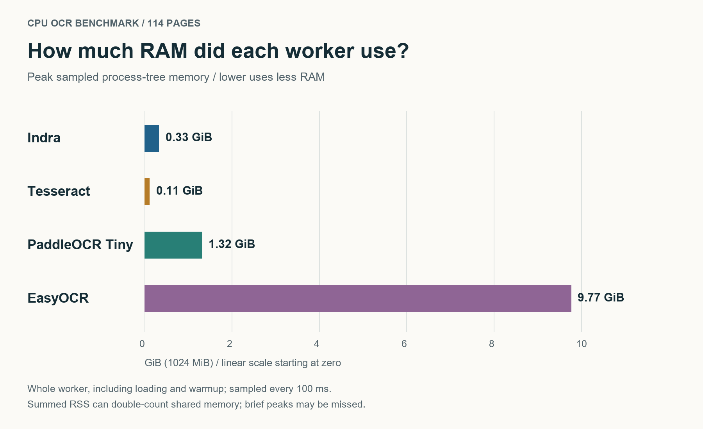

Indra OCR Beat Tesseract, EasyOCR & PaddleOCR in Our CPU Speed Test
114 pages, three passes each: Tesseract 5, EasyOCR and PaddleOCR PP-OCRv6 Tiny, tested on one CPU.
A local OCR choice has two costs: waiting for pages and fitting the model into RAM. On this book, Indra led on speed and text agreement; Tesseract used the least memory.
Disclosure: This article and its charts were prepared with AI assistance using recorded benchmark results.
1. Speed: Indra led this run

Higher is faster. Median of three passes on the same page images. Chart rendered from saved measurements with AI assistance.
PaddleOCR Tiny finished second for throughput. These timings include image decoding and Tesseract's per-page CLI startup; initial loading, PDF rendering, warmup, scoring and writes are excluded.
2. Word errors: the reference changes the score

Lower means closer text agreement. Filled bars: PDF text layer. Outlined bars: supplied AI-assisted transcription. Chart prepared with AI assistance.
Changing the reference changed the scores even though the OCR output stayed the same. Indra still had the lowest word error rate. WER counts changed, missing and extra words; case and punctuation count. Neither reference is fully independently verified. The transcription contains uncertain readings; excluding its 15 flagged pages kept the same ranking. Quote-style normalization also preserved the ranking.
3. RAM: Tesseract had the smallest footprint

Lower uses less RAM. Whole-worker memory includes loading and warmup, a broader scope than throughput. Chart prepared with AI assistance.
EasyOCR used the most RAM in this configuration. These are sampled worker peaks, not minimum system requirements; shared memory can be counted more than once and brief peaks can be missed.
What this means for this workload
- Indra: strongest speed and text-agreement result.
- Tesseract: smallest measured RAM footprint.
- PaddleOCR Tiny: second-fastest. EasyOCR was slower and heavier in the configuration tested.
How it was tested
Same 114 saved RGB pages, 200 DPI, one English book. Each engine had a warmup and three measured passes, four requested inference threads, no GPU, and zero execution failures. Normalized outputs were identical across each engine's passes.
Hardware: i7-12700K, about 96 GiB RAM. Models: Indra 0.3.2; Tesseract 5.5.3; EasyOCR 1.7.2, CRAFT/english_g2 with CPU dynamic quantization; PP-OCRv6 Tiny via ONNX Runtime CPU. This was not an entry-level-PC test or a search for each engine's best tuned setup.
The limits: One book cannot establish a universal winner. Indra previously measured 32.38 pages/min with matching model hashes; that cross-session difference is unexplained. Both references need independent verification. Handwriting, other languages and low-memory PCs remain untested here.
Full methods and detailed results.
Which documents should a follow-up cover: receipts, forms or multi-column reports?